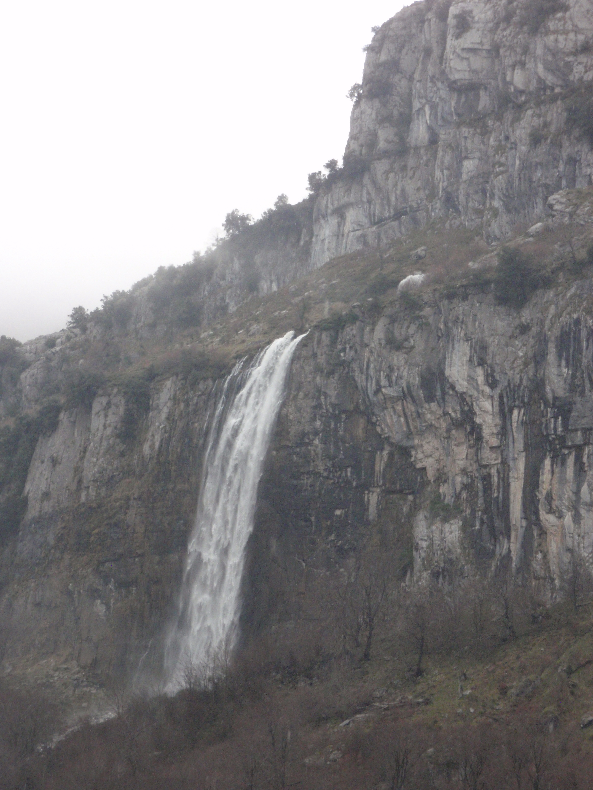
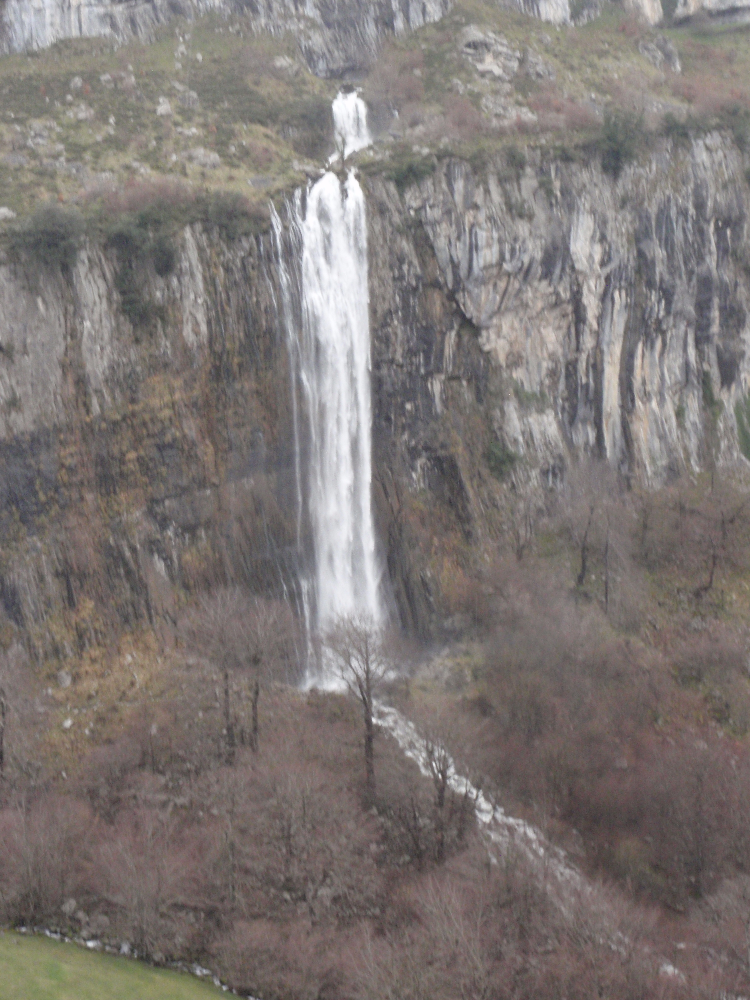
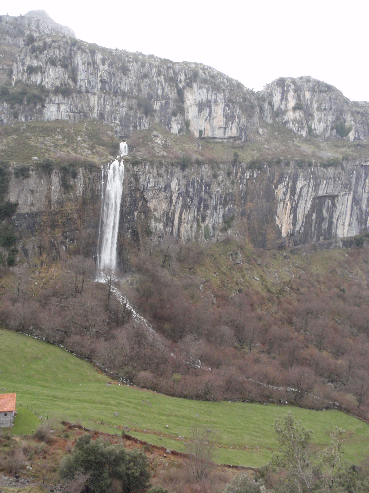

Potes - Cantabria
Potes es la capital de Liébana, comarca situada en el suroeste de Cantabria, entre varios
macizos montañosos: las sierras de Peña Sagra y Peña Labra y el macizo de Picos de Europa.
Su situación al abrigo de las montañas hace que tenga un microclima más cálido y seco,
diferenciado del resto de Cantabria.
Potes cuenta con un gran patrimonio arquitectónico religioso, civil y popular, además de
sus particulares tradiciones, en las que destacamos el Jubileo del monasterio de Santo Toribio.
La historia de esta villa se remonta al medievo, al edificio más simbólico de la villa,
la Torre del Infantado, que anteriormente era la Casa del Marqués de Santillana. Se trata
de una casa-torre del siglo XV, de planta cuadrada y rematada por cuatro torres angulares
terminadas en almenas, que está situado en pleno casco antiguo de la villa.Hay muchas
edificaciones en forma de torre, muy próxima a la del Infantado están las de Orejón de
la Lama, Calseco, Linares y Osorio.
Respecto a la arquitectura religiosa destacan dos iglesias advocadas a San Vicente, la
más antigua del siglo XIV y la nueva, que comenzó a construirse a finales del siglo XIX.
También hay dos pequeñas ermitas: la de la Virgen del Camino, y la de la Virgen de Valmayor.
Un paseo por Potes hace transportar al visitante a otra época, con sus callejuelas empedradas
y sus casonas populares. No hay nada mejor que perderse por la zona vieja, y en particular
por el barrio de la Solana, los puentes de San Cayetano y de la Cárcel, construidos sobre
el río que cruza la villa, el Quiviesa.
El lunes es el día más importante para los lebaniegos, se celebra el popular mercado semanal
en las que las gentes proceden de todos los puntos de la comarca para ofertar sus productos.
Legumbres, fruta, frutos secos, embutidos o quesos producidos por la zona. Muchos de estos
productos son la base de su plato más característico, el cocido lebaniego, que se puede
acompañar con el típico orujo lebaniego o con el tradicional Té del Puerto.
El viaje a Potes desde la Costa nos deja un buen recuerdo, atravesando unos de los lugares
más bellos y pintoresco de Cantabria, como es el Desfiladero de la Hermida.
Picos de Europa - Cantabria
Son una cordillera montañosa que se extiende por León, Asturias y Cantabria, constituida
por enormes moles de piedra caliza, que hace que este espacio tenga un color y aspecto
inconfundible. Los Picos de Europa son un reducto natural de valor incalculable por la
variedad de su fauna y flora.
Los Picos de Europa son perfectamente visibles desde las costas cántabras y asturianas
si se dan buenas condiciones meteorológicas, se trata de tres macizos perfectamente
delimitados: el occidental o del Cornión, el central o de Los Urrieles y el oriental o
de Ándara. Los ríos, con su sin igual poder transformador de este espacio natural, son
elementos claves de referencia para esta separación.
En el macizo Central en el que se levantan entre otros, el Naranjo de Bulnes o Pico Urriello
(2519m), Peña Vieja (2613m)el Llambrión (2642 m) y la Torre cerrado que con sus 5648 metros
es la máxima cumbre de Los Picos de Europa. Los ríos que conforman este macizo son el Cares
, que lo separa del macizo occidental y el Duje que lo separa del oriental.
Nacimiento rio Asón - Asón - Cantabria
El río Asón tiene su nacimiento en una cueva ubicada en un farallón rocoso, despeñándose
sus aguas en una bellísima cascada de unos 70 metros de altura. Aunque ésta es bien visible
desde la carretera, la forma más bonita de descubrir este maravilloso paraje es el camino
que remonta el curso del río desde Asón (250 m.) . Hay que dejar la carretera unos 300
metros después del pueblo y bajar a la derecha por una pista que nos lleva al viejo
barrio de San Antonio , donde está la iglesia. Luego el camino cruza un puente sobre el
Asón y remonta el valle, siguiendo siempre por la margen izquierda, primero entre cabañas
y luego por el bosque. Tanto las laderas como el fondo del valle tienen abundante arbolado,
con predominio de las hayas y las encinas. En cuanto a la fauna, lo más destacable son los
numerosos buitres que anidan en los cortados rocosos. Al final el camino vadea el río Asón
(existen piedras que permiten el paso) y algo después se llega a Cailagua (500 m.) , una
bella pradería situada al pie de la cascada .
 
